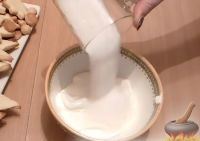

Рецепты

Ингредиенты:
Маргарин - 120 г, яйцо - 1 шт., сахар - 100 г, мука - 200 г, разрыхлитель - 0,5 ч. ложки, манка - 20 г, соль - 0,5 ч. ложки, морковь - 1 шт. (для установки елочки).
Для крема:
Сметана - 250 г, сахар - 100 г, пищевой краситель (зеленого цвета), желатин сухой - 2 ч. ложки, вода - 3 ч. ложки, кондитерская посыпка для украшения.
Рецепт:
1. Растопить маргарин. Добавить сахар.
2. Вбить яйцо. Всыпать манку. Посолить.
3. Постепенно добавлять муку. Тщательно перемешивать. В процессе добавить разрыхлитель.
4. Выложить тесто на стол, замесить его. Поместить в холодильник на 30 минут.
5. Вырезать трафарет для елки (в виде восьмиконечной звезды).
Скачать тарфарет! (если не понравился можете найти свой)6. Тесто раскатать. Приложить трафарет, вырезать заготовку-звездочку ножом. Лишнее тесто убрать.
7. Переложить заготовку на противень. Сделать еще одну звездочку. Выпекать в разогретой духовке 5-10 минут при температуре 180 градусов.
8. Обрезать трафарет, уменьшив его на 1 см. Вырезать еще 2 звездочки.
9. Обрезать трафарет еще на 1 см. Сделать еще 2 звездочки. И еще раз обрезать трафарет и вырезать звездочки. Выпечь все заготовки в духовке.
10. Из морковки вырезать "пенек". Воткнуть в нее палочку для суши (или шпажку для шашлыка).
11. Сметану смешать с сахаром. Тщательно взбить.

12. Добавить краситель. Перемешать.
13. Развести желатин в воде. Прогреть на водяной бане.
14. Вылить желатин в сметану. Перемешать..
15. Взять самую большую звездочку. Аккуратно нанизать ее на шпажку. Опустить до самого низа.
16. Выложить крем.
17. Взять второй корж. Точно так же его нанизать и смазать кремом. Развернуть звездочку так, чтобы лучи у первого и второго коржа были в шахматном порядке.
18. Точно так же нанизать звездочки меньшего размера. Поставить елку в холодильник, чтобы крем застыл.
19. Украсить звездочку посыпкой и конфетами.
С (наступающим) Новым годом. Конечно извините если он прошел).
Готово! Приятного аппетита!
Скачать видео-рецепт! Видео: на youtube: https://www.youtube.com/watch?v=uSX6boJIsvw&feature=youtu.be10 декабря, 2022 года.